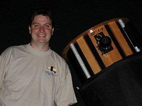

Photo is courtesy of Vance Petriew. |
Mr. Vance Petriew is an amateur astronomer whose life long interest in astronomy started when he was 5 years old. Growing up on the farm in rural Saskatchewan, he spent many nights looking up at the stars and using his telescope to show family, friends and neighbors the wonderous views of the night sky. Vance joined the RASC 25 years ago as a member of the Saskatoon Centre while attending the University of Saskatchewan and is now a member of the RASC - Regina Centre. His passion for astronomy has led him to many accomplishments over the years. He's been Astronomy Club President multiple times, he's been written about in many publications including 11 scientific papers, he has made over 150,000 variable star observations, he was instrumental in getting the Dark-Sky Preserve started in Cypress Hills and he has won many awards including the RASC Ken Chilton Prize, the AAVSO Director's Award and the Edgar Wilson Award. Vance Petriew currently lives in White City, SK with his wife Jennifer and three wonderful daughters.
!!KCAB SI WEIRTEP TEMOC - "You're going the wrong way!" Learn why making mistakes can sometimes be a dream come true. Join Vance Petriew as he weaves a comet's tale giving you the opportunity to experience the impact one little comet can have.
|